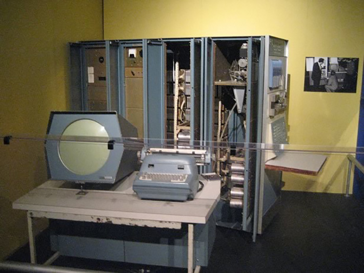
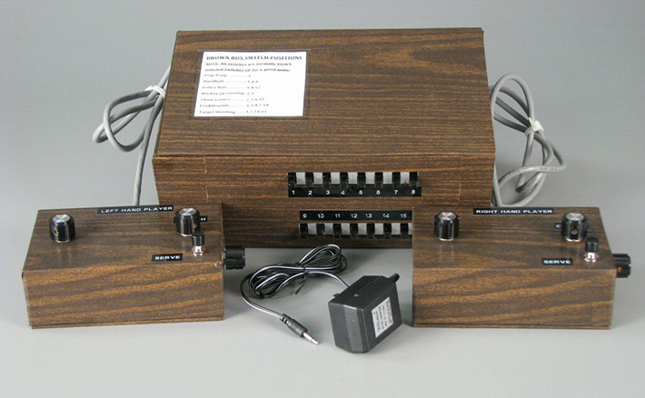
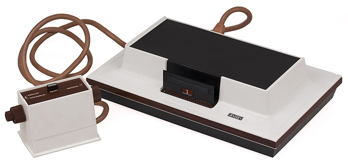
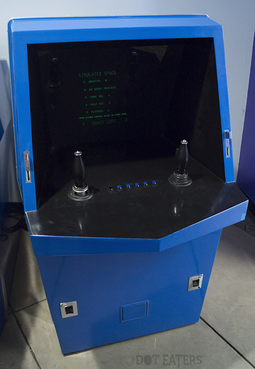
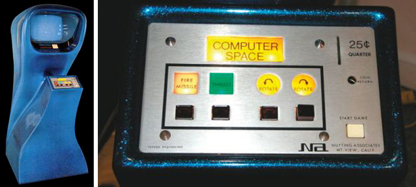
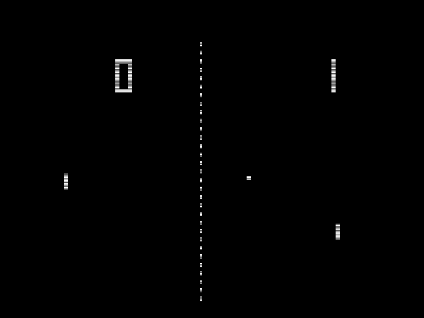
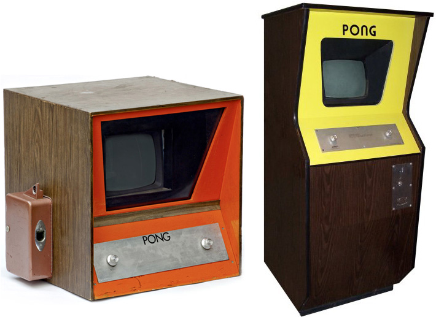

GAME PLAY 2: FALL '15
- Instructor: Sam Sheffield (ssheffield@mica.edu)
- This Site (Short URL): tiny.cc/gp2f15
- Online syllabus: gp2syllabus.pdf
- Code repository: github.com
09/09: EARLY HISTORY + UNITY: WORKFLOW, CODE, SPRITES & CONTROL
TODAY:
Welcome back!
- Share MDA analyses
- Origins of video games
- Unity, part 1
ORIGINS OF VIDEO GAMES
A brief timeline of early video games:
- 1947: CRT Amusement Device by Thomas T. Goldsmith Jr.
- 1952: OXO/Noughts and Crosses (Tic-Tac_Toe) by Alexander S. Douglas
- 1958: Tennis for Two by William Higinbotham
- 1961: SpaceWar! by Steve Russell & the Tech Model Railroad Club
- 1967: Ralph Baer's "Brown Box" (Chase, Ping-Pong)
- 1971: Galaxy Game by Bill Pitts & Hugh Tuck
- 1971: Computer Space by Nolan Bushnell & Ted Dabney
- 1972: Pong by Nolan Bushnell & Ted Dabney
1947: CRT AMUSEMENT DEVICE BY THOMAS T. GOLDSMITH JR.
Currently, the earliest known proto- "video game" ran on a computer and display like this.
1952: OXO/NOUGHTS AND CROSSES (TIC-TAC_TOE) BY ALEXANDER S. DOUGLAS
Emulation of game and interface. No existing documentation available.
1958: TENNIS FOR TWO BY WILLIAM HIGINBOTHAM
The instruction book that came with the computer described how to plot trajectories and bouncing shapes, for research. I thought, "Hell, this would make a good game." -William Higinbotham
(Sleepy) Gameplay video
More about the development of Tennis for Two
1961: SPACEWAR! BY STEVE RUSSELL & THE TECH MODEL RAILROAD CLUB
Game running on original PDP-1 hardware
Emulated gameplay
1967: RALPH BAER'S "BROWN BOX" (CHASE, PING-PONG)
Ralph Baer's "Brown Box" prototype.
Ralf Baer and technician Bill Harrison demonstrating the "Brown Box"
Ralf Baer Smithsonian feature
Baer's "Brown Box" eventually became the first commercially available home console, the Magnavox Odyssey, in 1972.
The Odyssey cost $100, featured colored screen overlays, cartridge-based games, and an optional rifle(light gun) peripheral.
Video demonstrating a number of the available video overlays
1971: GALAXY GAME BY BILL PITTS & HUGH TUCK
Installed at Stanford University. 10 cents to play, 25 cents for 3 plays.
1971: COMPUTER SPACE BY NOLAN BUSHNELL & TED DABNEY
Though a commercial failure, Computer Space set the basic format for all arcade games to come– a dedicated machine built to run a single game.
Computer Space gameplay
1972: PONG BY NOLAN BUSHNELL, ALLAN ALCORN, & TED DABNEY
Atari Inc.'s first arcade video game
Pong prototype and final commercial cabinet.
The hollow sound of PONG
"You had to read the instructions before you could play, people didn't want to read instructions. To be successful, I had to come up with a game people already knew how to play; something so simple that any drunk in any bar could play." Allan Alcorn, designer of Pong
Nolan Bushnell, one of the founders of Atari, speaking about the early years of the video game industry.
UNITY 2D : PART 1
Some goals for today...
- Familiarize yourself with Unity's interface
- Creating new Projects and Scenes
- Import single images as sprites
- Manipulating the camera
- Distinguishing the Scene view from the Game view
- Adding assets to the Scene
- Working with the Inspector
- Write your first C# script using MonoDevelop
- Use the keyboard as input
- Changing the sorting order of objects in a scene
- Basic collision using the Physics 2D & Rigidbody 2D components
Some assets to work with in class today are available here.